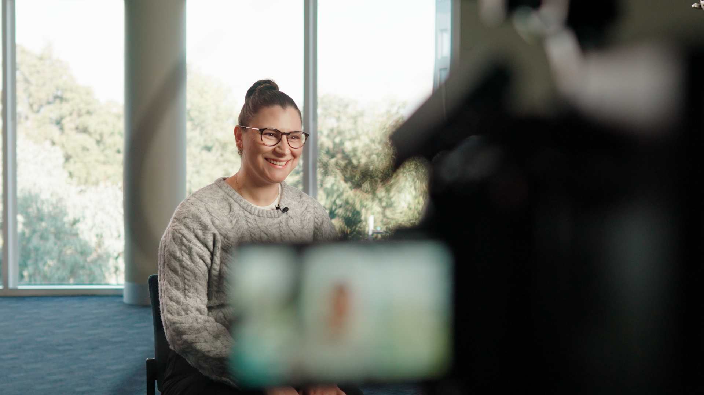
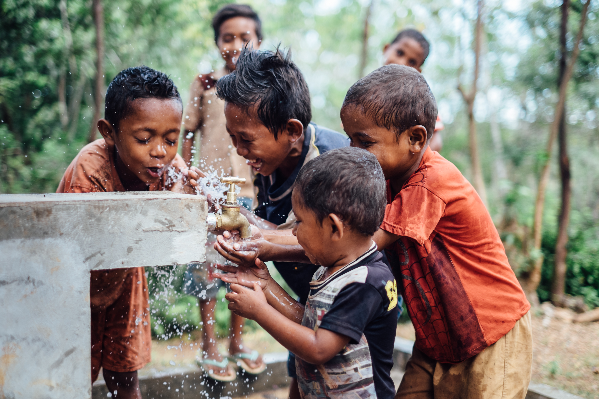

Video production
/ 01 · Why we exist
At Commonground, we believe meaningful communication begins with finding common ground.
Whether you’re engaging customers, patients, supporters, partners, staff or communities, trust is built when people feel understood, respected and connected. That’s why everything we do — from brand strategy and video production to photography and communication campaigns — is designed to uncover the shared values, experiences and aspirations that connect organisations with the people they serve.
Through authentic storytelling, strategic thinking and creative production, we help businesses, healthcare organisations, educational institutions and not-for-profits communicate with clarity, build credibility and inspire action.
Because the strongest brands aren’t built on what makes us different, they’re built on the common ground that brings people together.
/ 02 · Support we offer

Brand films, documentaries, healthcare education, training and campaign videos.
Watch it work
Documentary, humanitarian and corporate photography — portraits, events, impact.
See the personPurpose, positioning, messaging and identity people can trust.
Find your whyStrategy and content built around shared values.
Reach further/ 03 · Clients
Healthcare teams, universities, not-for-profits and businesses have trusted Commonground with stories that had to be crafted carefully, as well as clearly — patient films, campaign videos, brands and portraits. The people who commissioned that work say more than we should. Read them, and the organisations behind them, on the clients page.